A hot cocoa bar is one of the easiest winter setups to pull off well.
A few mugs, a handful of toppings, and one good base recipe cover most of it, the rest is just arrangement.
These 15 ideas cover a range of styles and space constraints, from a single countertop tray to a full cart setup.
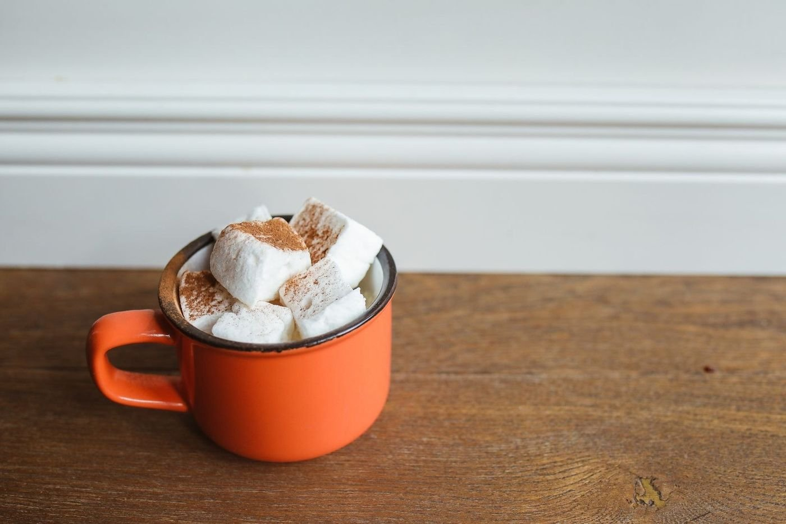
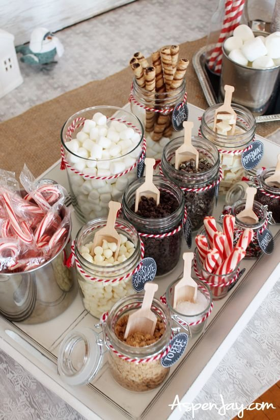
Hot Chocolate Bar Kit, 202 Pcs, Holiday Gathering Supplies
Shop on AmazonMarshmallow Mugs Set of 4 with Handle, Cute Hot Chocolate Cups
Shop on AmazonSupplies Worth Having Before Decorating
Mugs, a cocoa or hot chocolate base, marshmallows, and two or three topping options are the real essentials, everything past that is decorative.
Having the functional side sorted first makes the styling step much faster and less stressful.
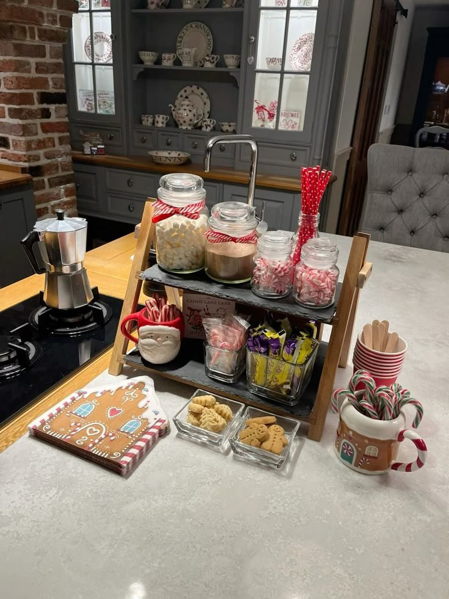
What Actually Makes One Feel Finished
A good base recipe, a small variety of toppings, and mugs that actually match the occasion matter more than an elaborate display.
Labeling each topping clearly also matters more than it sounds like it should, especially for a bar used by guests who aren't familiar with what's on offer.
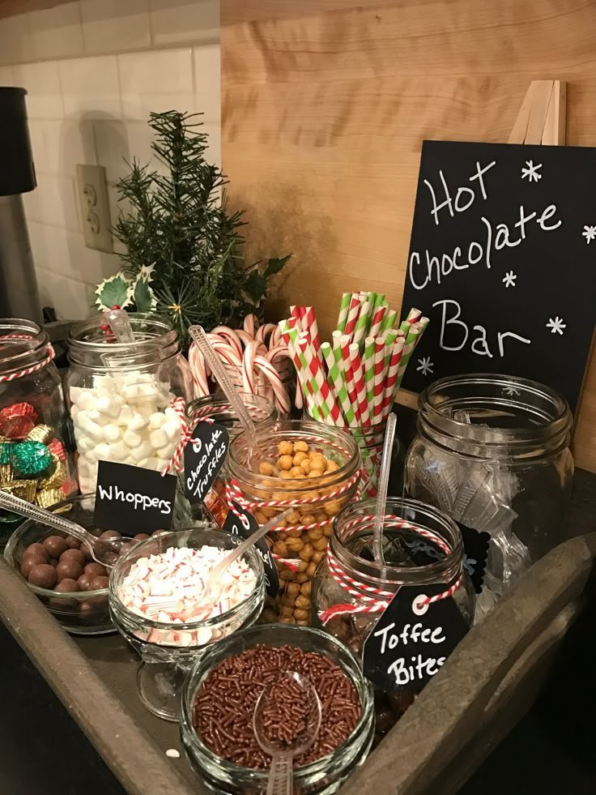
Why a Hot Cocoa Bar Is Worth Setting Up
It turns a simple drink into a small event, which makes it one of the highest-payoff winter setups relative to the effort involved.
It also works for almost any occasion, a casual weeknight, a holiday gathering, or a kids' movie night, without needing a different setup for each one.
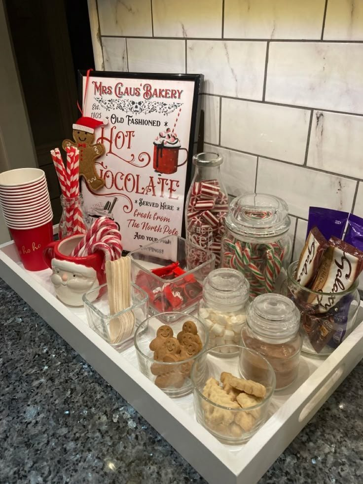
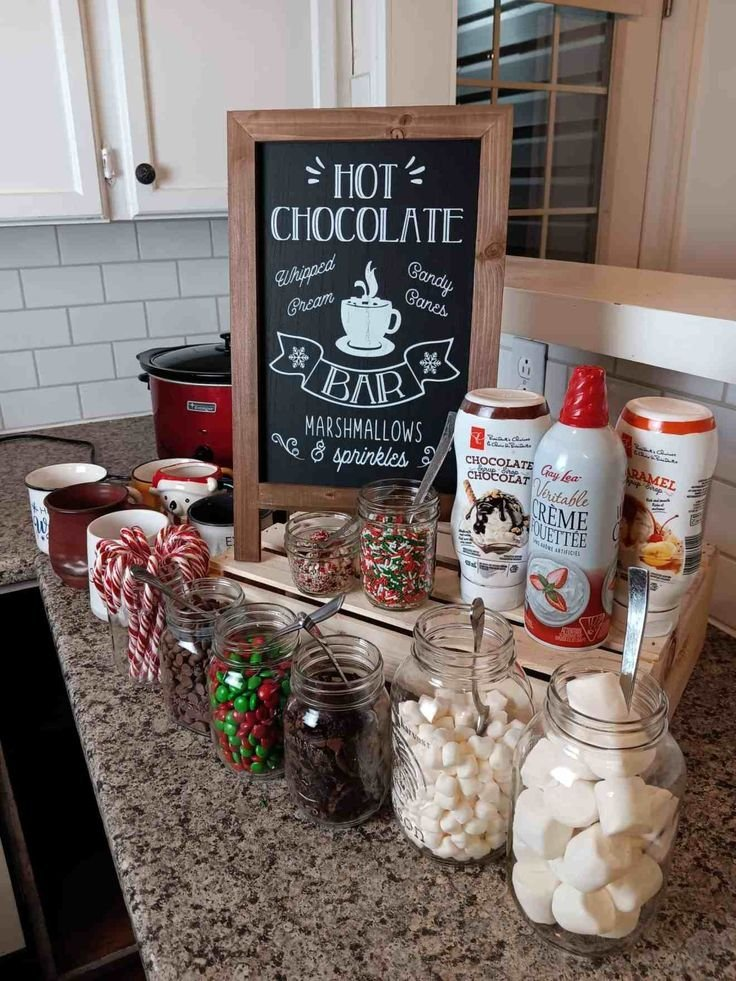
1. A Movie Night Version
Paired with blankets, pillows, and the actual movie setup, this version turns cocoa into part of a bigger cozy evening rather than a standalone drink station.
This works well set up right in the living room, close enough to the couch that nobody has to get up mid-movie.
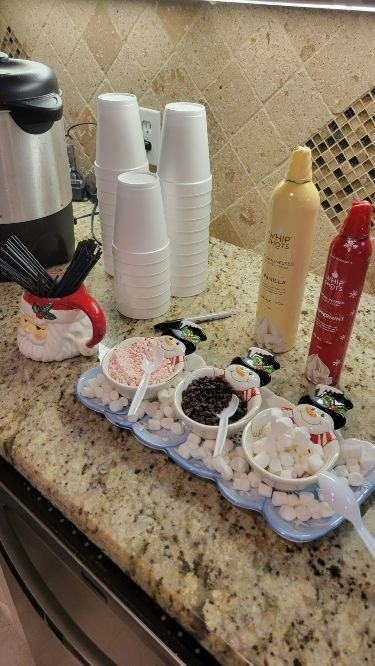
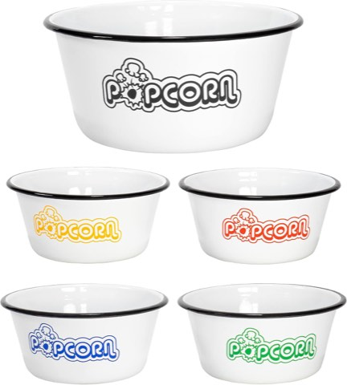
Red Co. White Enamelware Popcorn Bowls, Set of 5, 4 Quart and 1.2 Quart
Shop on Amazon2. An Elegant Neutral Version
Cream and white tones, simple glass or ceramic mugs, and understated toppings bring a more sophisticated feel to the whole setup.
This works especially well for an adult gathering or holiday party where a more polished look fits the occasion.
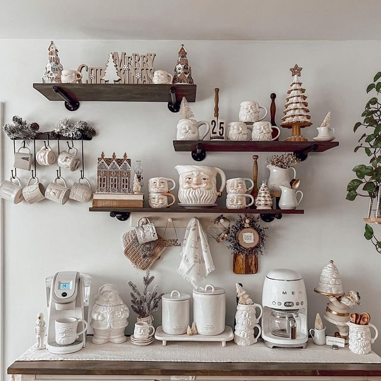

3. A Version With Extra Seasonal Decor
Pinecones, mini ornaments, and a bit of greenery around the station tie it into the rest of the home's winter decor.
This works well as an extension of existing holiday styling rather than a separate standalone setup.
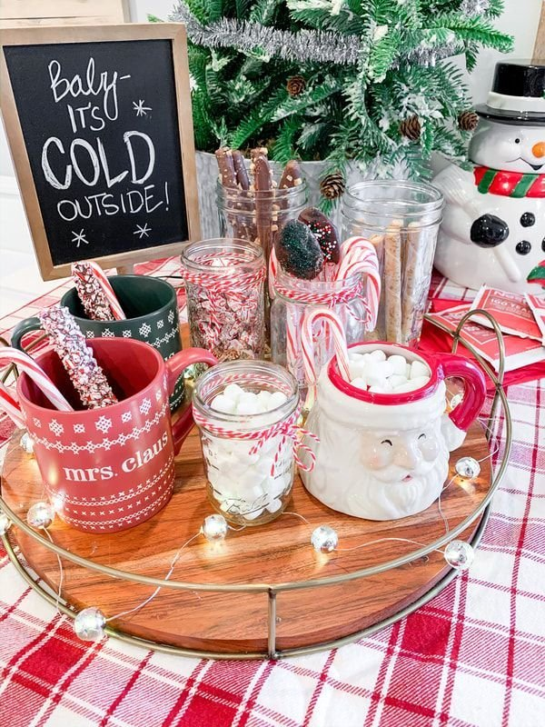
4. A Small-Space Tray Version
A single tray with everything condensed onto it works in an apartment or any kitchen without much counter space to spare.
This version proves the whole idea scales down just as easily as it scales up for a bigger party.
5. A Budget-Friendly Version
A basic cocoa mix, marshmallows already on hand, and mismatched mugs from the cabinet cover the whole concept without any new purchases.
This proves the idea works regardless of budget, the setup and arrangement matter more than how much was spent on it.
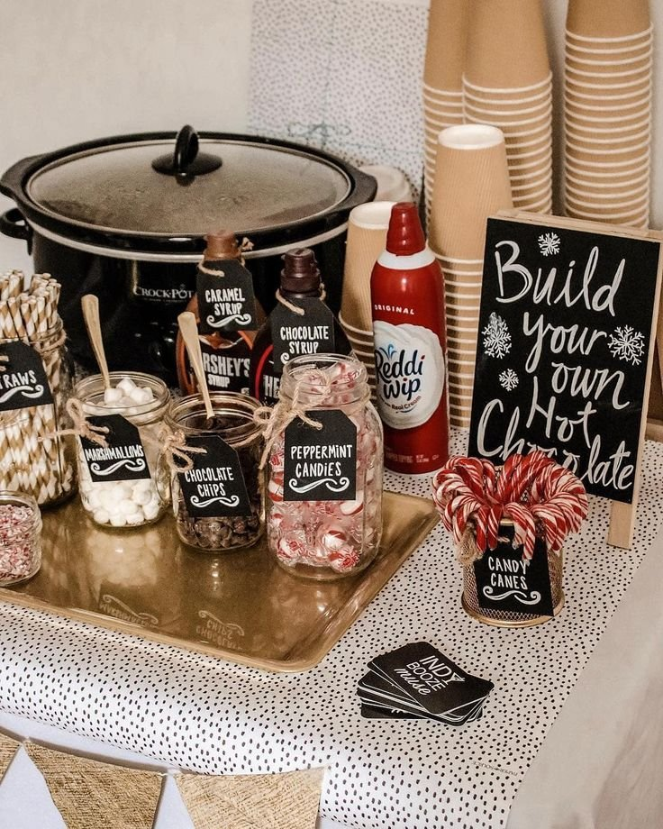
6. A Chocolate Lover's Dream Version
Chocolate shavings, multiple types of chocolate syrup, and a rich dark cocoa base turn this into a genuinely decadent version rather than a quick treat.
This suits a smaller, more intentional gathering better than a large casual one.
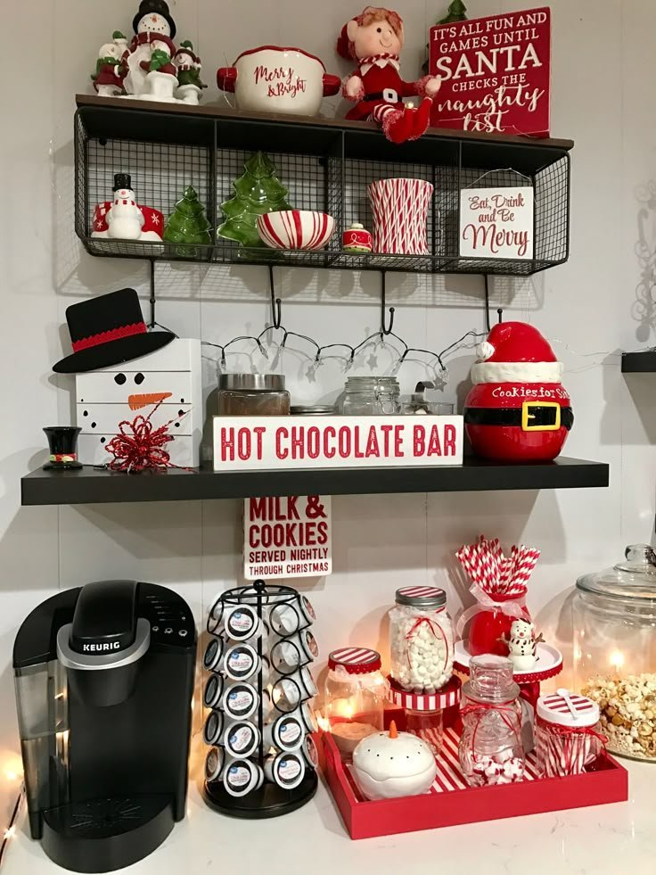
7. A Peppermint Lover's Version
Crushed peppermint, candy canes, and a peppermint-infused cocoa base build the whole station around one specific flavor.
This works especially well as a dedicated holiday-party station rather than an everyday setup.
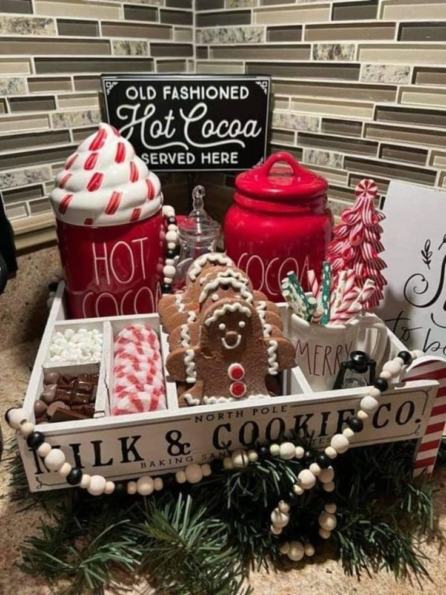
8. A Full Cart Setup
A rolling bar cart gives the whole station mobility, which is useful for moving it between the kitchen and a living room gathering spot.
This also naturally adds tiered storage for mugs, toppings, and the cocoa base all in one spot.
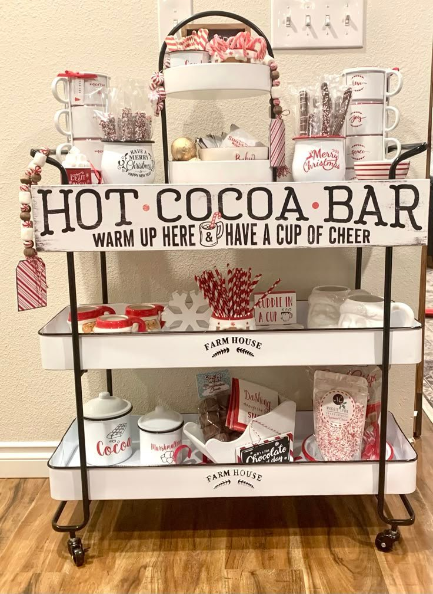
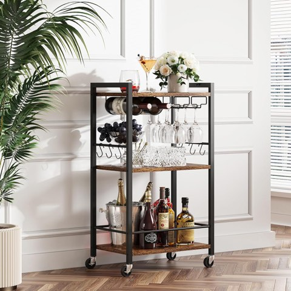
TUTOTAK Bar Cart with Wheels, Mini Drink Cart with Wine Rack and Glass Holder
Shop on Amazon9. A Version With Coffee Add-Ins
A splash of espresso or a coffee liqueur option turns the same basic setup into something that works for adults who want a bit more than straight cocoa.
Keeping the coffee add-ins clearly separate from the kid-friendly toppings keeps the bar easy for everyone to use correctly.
10. An Outdoor Winter Version
A thermos-based setup on a porch or patio table works for anyone gathering outside for a bonfire, sledding, or just cold-weather hangout time.
Insulated mugs matter more here than for an indoor version, since the drink needs to stay warm longer in the cold.
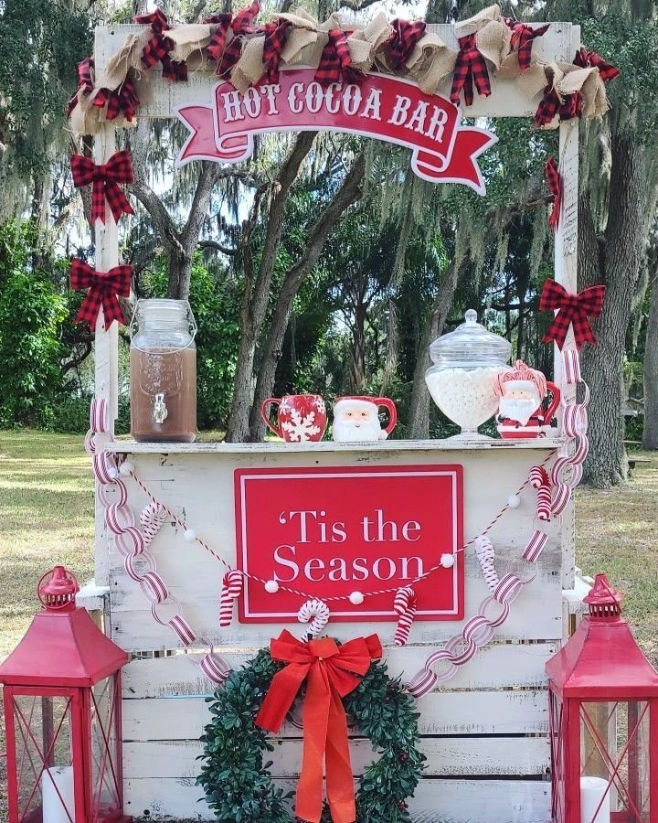
11. A Christmas-Themed Bar
Red and green accents, holiday-printed mugs, and candy cane toppings turn this into a dedicated Christmas moment rather than a general winter one.
This works well set up for just the holiday week, rather than staying out for the whole season.
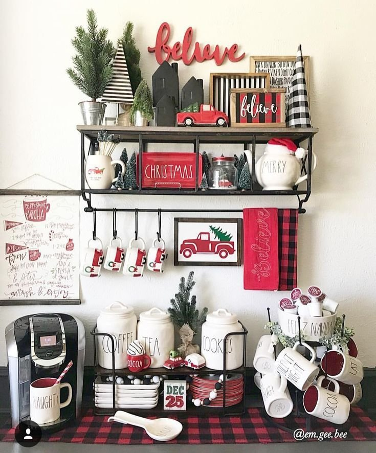
12. A Minimalist Modern Station
A neutral palette, simple ceramic mugs, and just one or two toppings keep this version feeling clean rather than cluttered.
This suits a modern kitchen better than a more rustic or heavily decorated version would.
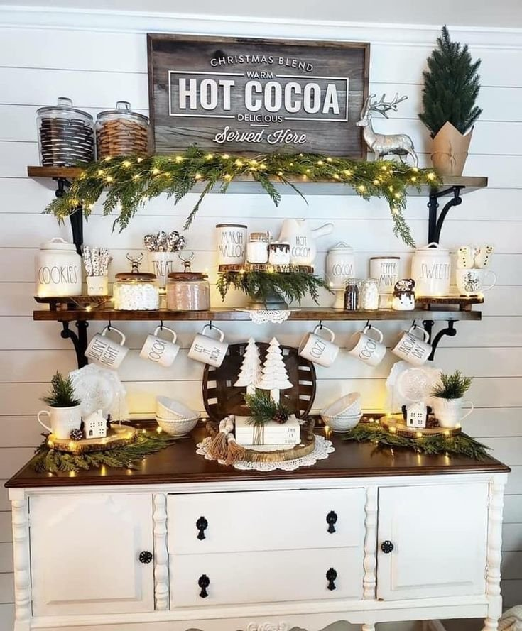
13. A Kid-Friendly Setup
Colorful mugs, fun toppings like sprinkles and candy, and everything placed at a height kids can actually reach make this version work for younger guests.
Keeping hot liquids out of easy reach while still letting kids choose their own toppings balances safety with the fun of it.
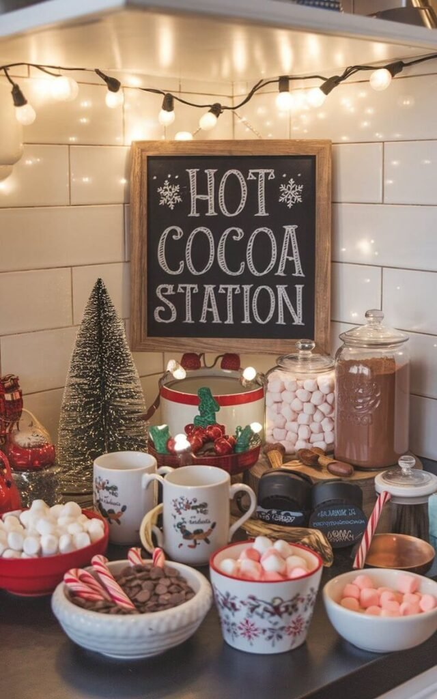
14. A Rustic Farmhouse Version
Wood trays, mismatched vintage mugs, and a burlap or plaid runner bring a warm, farmhouse feel to the setup.
This pairs naturally with existing farmhouse decor elsewhere in the kitchen, rather than looking like a separate styled moment.
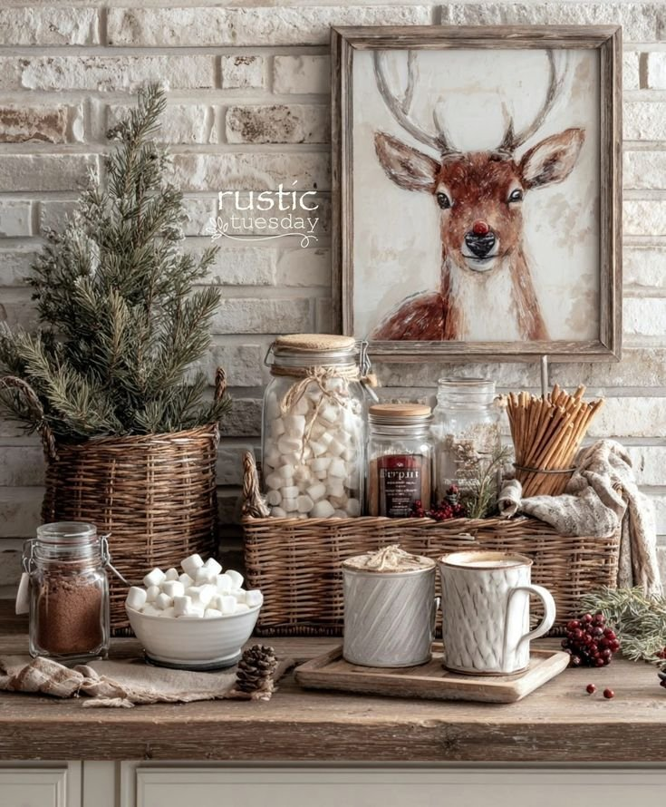
Artoid Mode Rust Farmhouse Plaid Table Runner, 13 x 72 Inch
Shop on Amazon15. A Classic Cozy Countertop Bar
A simple tray on the counter with mugs, a thermos of cocoa, and a few toppings covers the basics without needing any dedicated furniture.
This is the easiest version to set up and break down, which makes it a good starting point for a first attempt.
Fibogollo Acacia Wood Serving Trays with Handles, Set of 2
Shop on AmazonAirpot Coffee Dispenser with Pump, 102 oz, Insulated Carafe
Shop on AmazonMistakes Worth Avoiding
Too many toppings without labels is the most common mistake, guests end up guessing instead of enjoying the station.
Skipping insulated mugs or a thermos for an outdoor setup means the drink goes cold before anyone finishes it.
Overcrowding a small tray or counter space creates more mess than charm.
Keeping It Organized
Grouping toppings into small labeled containers, rather than leaving bags and boxes out, keeps the whole station looking intentional.
A quick wipe-down and restock between uses keeps a hot cocoa bar that's out for the whole season from looking tired by the second week.
Final Thoughts
None of these 15 versions require starting from scratch every time.
Pick whichever style fits the occasion, budget, elegant, kid-friendly, or full cart, and adjust the toppings from there.
A hot cocoa bar is one of the simplest ways to make an ordinary winter evening feel like something a little more special.
Even the smallest version, one tray, two toppings, a handful of mismatched mugs, earns its spot on the counter once the weather turns cold.